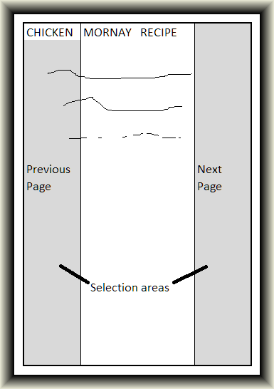
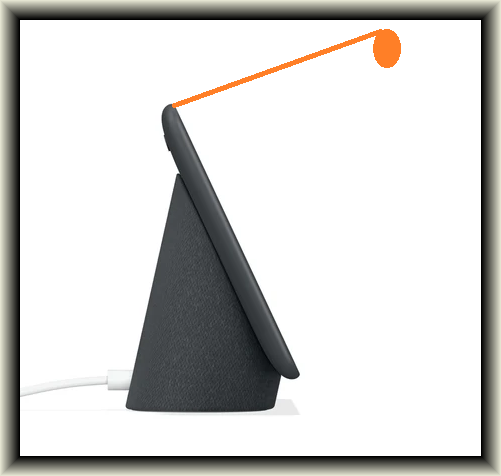

Back to index
IT PROJECT: RECIPE BY GESTURE
Motivation:
I am not a great chef. I am not the next Gordon Ramsay, Jamie Oliver or Masterchef winner 2021. However, I do like to have a nice dinner, prepared at home. This means that I do cook, but when I do it’s almost always following a recipe.
One of my pet peeves when following a recipe is where do I put the cookbook? And how do I turn the page when my hands are covered in raw meat, or grated carrot?
17.8 million cookbooks were sold in the US in 2018 (NBC News 2019) so I’m certainly not the only person following a guide. How to make it easier?
Overview:
There are already digital versions of recipes. Google Nest in particular has a recipe mode built in, with voice commands (Google 2020). However, voice commands can be clunky to use, with delays, misinterpretation, and sometimes a failure to even hear a trigger. My idea is to take the existing recipe functionality a step further, by allowing users to gesture when they want to move to the next page. This would build upon the existing tech and allow users who are unable or otherwise unwilling to use voice commands to be able to navigate a recipe, simply by gesturing.
Never get raw chicken on your page/device, or get misunderstood by voice recognition again while cooking!
Description:

Figure 1
At its heart, the project can be boiled down to a simple programming action: if user hovers finger here, then do this. There are many layers of complexity that can be added on top, but this is the ultimate idea.
In order to enable this to happen, a camera or other motion sensor needs to be positioned with view of the target area. This would then be set to only accept inputs if it detects motion in designated spaces. To avoid false positives, this could be set to only accept the input if the motion is sensed for at least 2 seconds, or require a confirmation (eg. 2 gestures in the same place). From there, the system would take this input and pass it on to the existing product providing the recipe, which would react appropriately.
This is a rudimentary example of how the interface between the gesture detector and the recipe provider (in this case, a Google Nest) could work.
- User gestures “Next page”
- Sensor detects “Next page” command
- Speaker connected to sensor says “OK Google, next page”
- Google Nest goes to the next page.
Note that this is an inefficient method shown for simplicity, and ease of initial prototype creation.

Figure 2 (adapted from Google 2020)
It would be better to directly use something like an API (Application Programming Interface) to remove the speaker step and requirement, however this example shows how it could work with any voice activated device, without any requirements from the creator of that device.
The sensor would need to be something compact that could be easily mounted in the kitchen in combination with the recipe provider. One example is shown in Figure 2 (adapted from Google 2020), in orange, again using the Google Nest as a guide.
In this case, the sensor is mounted on the Google Nest with a view of the screen. When the user gestures to one side of the screen, the sensor would pick this up as proceed as per the previous example.
There will be challenges in programming the sensor to only be triggered by human gestures, ignore the screen underneath, etc.
There is also an opportunity to scale up. For example, to take it further could be to project the recipe on a wall so it is not taking up any bench space at all. The sensor could then also be oriented at the wall, so in fact if the user wanted to turn the page they may just have to point, or wave.
Tools, tech and skills required:
What’s needed to create this project will depend on what is hardware/software is providing the recipe. For the purposes of this first example, we will use the Google Nest.
As the Google Nest features voice input, we will make use of this for a first example. This will allow us to remove some programming steps required to have a direct software level input into the Google Nest. Having the ability to directly access the Nest would greatly enhance the functionality of the project, and should be considered in the future.
A camera or motion sensor(s) would be required to detect input on the target area(s). Using a camera would require the use of software that would then allow the camera to only detect movement in the areas specified. The creation of this software would require further research into what is required. A simpler solution would be to use motion sensors with their fields of view limited to only the areas we want to monitor. For instance, one motion sensor could be use to monitor the ‘next page’ area, while another monitors ‘previous page’.
Once the motion sensor detects input, this then needs to be processed by either a computer or a dedicated circuit board that is build for this purpose. A Raspberry Pi would serve to be able to take this input and turn it into our desired output.
Finally, we would need a simple speaker to be able to play a recording of the action we’d like the Google Nest to perform. A cheap speaker featuring aux input would be all that is required to provide proof of concept. A louder speaker may be needed in noisier kitchens.
Outcome:
If this was successful, it would make life easier for people who like to cook from recipes, but want to do so in a touchless fashion. From an accessibility standpoint, it would give the same functionality to those who find it difficult or impossible to interact with voice control, whether due to disability, accent or ambient noise.
If successful this could then be applied in other areas where gesture control can be used, including something as simple as reading a book or watching a video. While gesture detectors already exist, these are highly specialised and usually are required to be worn on the body. The implementation in this project is designed to be simple and freeing for the user.
Alasdair Cameron s3884660